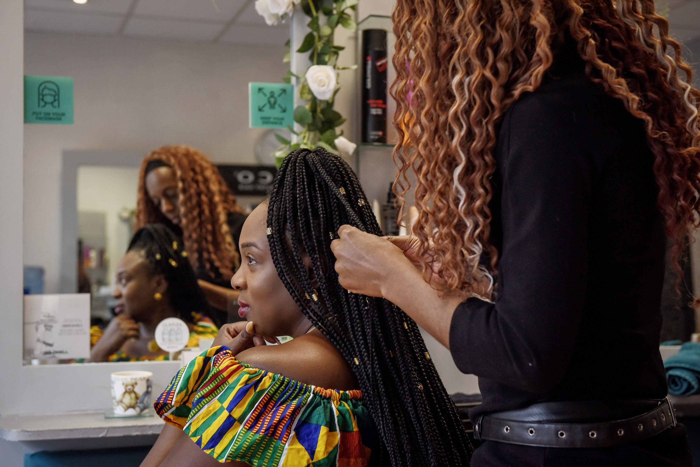
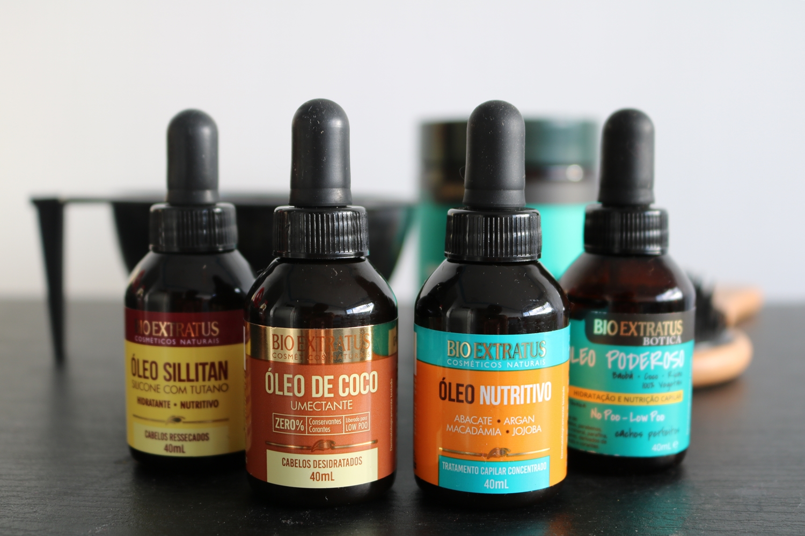
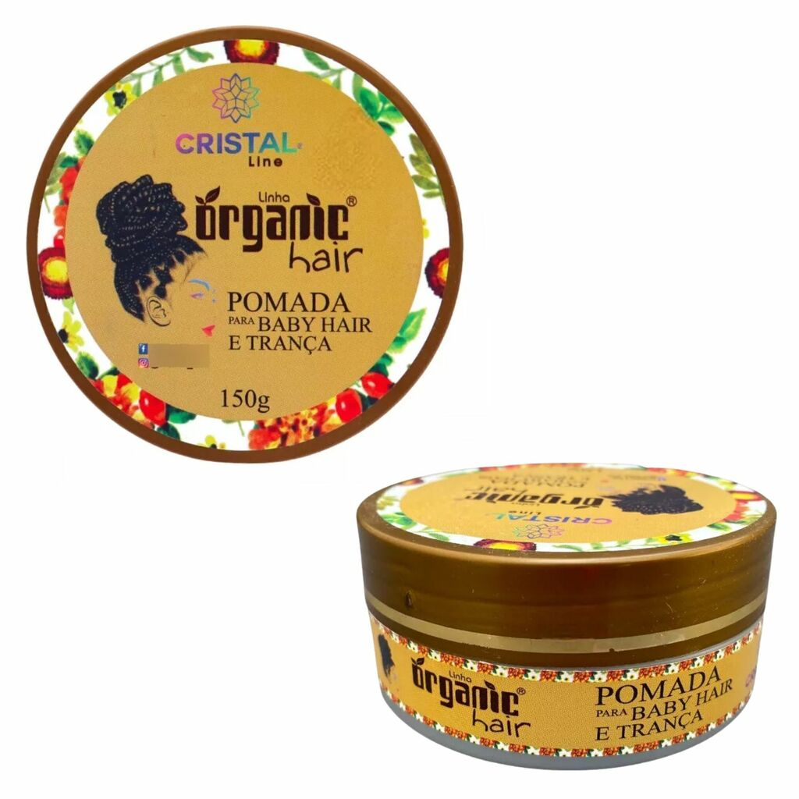

Técnicas Especializadas: Os profissionais são treinados em técnicas específicas que garantem um acabamento perfeito e confortável, minimizando danos aos fios

Cudado dos cabelos
Shampoos e Condicionador hidratantes
Máscaras de tratamento + Brinde
Óleos capilares
Creme de pentear
Géis ou pomadas
Séruns – Para brilho e proteção.
Protetores térmicos